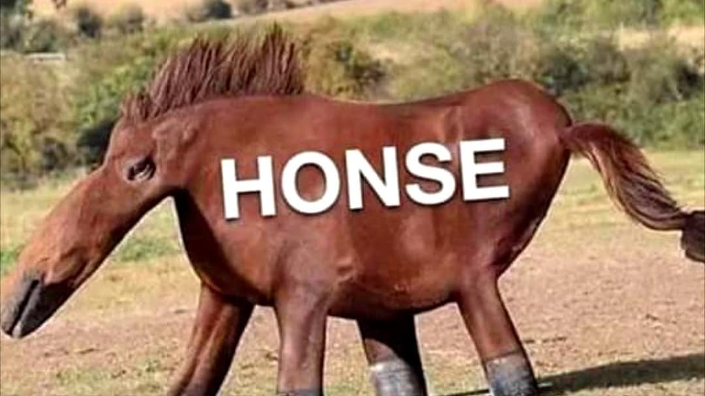
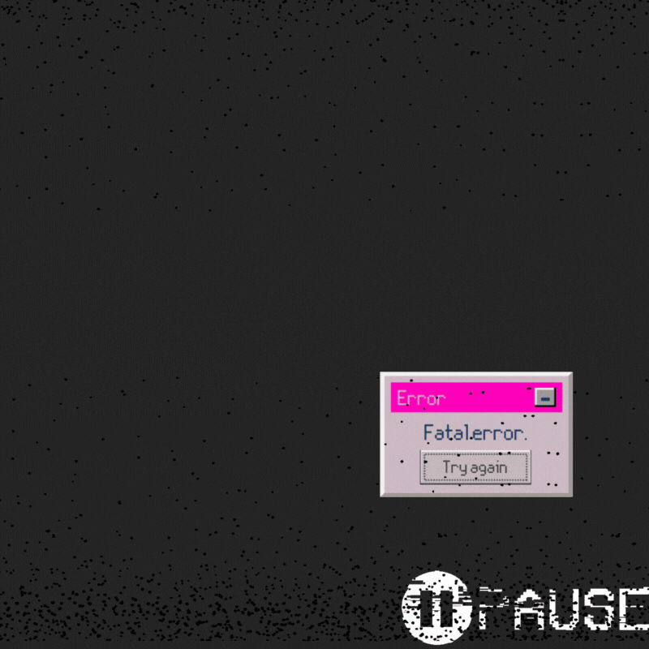

with words glued to the page of memories yet to be made
every
wrong n𝅝te
is a chance
to say
♪ its jazz ♪

the return of honse

one of the greatest assets an artist has the ability to improvize and bounce back from errors on the fly. it's what allows a music genre like jazz to flourish, with it's emphasis on exploring the unconventional.
when it comes to coding, every error message, compiler crash, and bug just means you're getting closer to the solution. that or you're making new errors, but either way, its better than stagnation.
take every spontaneous note not a part of the current scale
and use it as an opportunity to play around with conventions rather than try to correct it
'cause i'm standing at the edge of the world
its calling me by my name
telling me "it's only a leap of faith."